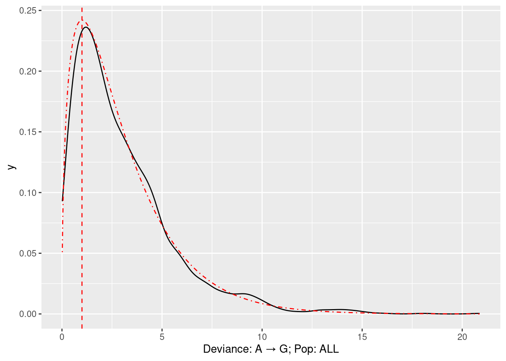

statistic_calibration
Andy Beck
2024-12-06
Last updated: 2025-01-06
Checks: 7 0
Knit directory: LSCI_pipeline/
This reproducible R Markdown analysis was created with workflowr (version 1.7.1). The Checks tab describes the reproducibility checks that were applied when the results were created. The Past versions tab lists the development history.
Great! Since the R Markdown file has been committed to the Git repository, you know the exact version of the code that produced these results.
Great job! The global environment was empty. Objects defined in the global environment can affect the analysis in your R Markdown file in unknown ways. For reproduciblity it’s best to always run the code in an empty environment.
The command set.seed(20240916) was run prior to running
the code in the R Markdown file. Setting a seed ensures that any results
that rely on randomness, e.g. subsampling or permutations, are
reproducible.
Great job! Recording the operating system, R version, and package versions is critical for reproducibility.
Nice! There were no cached chunks for this analysis, so you can be confident that you successfully produced the results during this run.
Great job! Using relative paths to the files within your workflowr project makes it easier to run your code on other machines.
Great! You are using Git for version control. Tracking code development and connecting the code version to the results is critical for reproducibility.
The results in this page were generated with repository version f74e31a. See the Past versions tab to see a history of the changes made to the R Markdown and HTML files.
Note that you need to be careful to ensure that all relevant files for
the analysis have been committed to Git prior to generating the results
(you can use wflow_publish or
wflow_git_commit). workflowr only checks the R Markdown
file, but you know if there are other scripts or data files that it
depends on. Below is the status of the Git repository when the results
were generated:
Ignored files:
Ignored: .Rhistory
Ignored: .Rproj.user/
Ignored: data/1kgp/
Ignored: data/hgdp/
Ignored: data/reference/
Ignored: output/controls/
Ignored: output/figs/
Ignored: output/single_pos/
Ignored: output/singletons/
Ignored: output/slurm/
Ignored: output/two_pos/
Ignored: scratch/
Unstaged changes:
Modified: code/single_position_models_sc.py
Note that any generated files, e.g. HTML, png, CSS, etc., are not included in this status report because it is ok for generated content to have uncommitted changes.
These are the previous versions of the repository in which changes were
made to the R Markdown (analysis/statistic_calibration.Rmd)
and HTML (docs/statistic_calibration.html) files. If you’ve
configured a remote Git repository (see ?wflow_git_remote),
click on the hyperlinks in the table below to view the files as they
were in that past version.
| File | Version | Author | Date | Message |
|---|---|---|---|---|
| Rmd | f74e31a | Andy Beck | 2025-01-06 | wflow_publish(c("analysis/index.Rmd", "analysis/statistic_calibration.Rmd", |
| Rmd | bbc121d | Andy Beck | 2025-01-06 | Add single chromosome code |
| html | bbc121d | Andy Beck | 2025-01-06 | Add single chromosome code |
library(tidyverse)── Attaching core tidyverse packages ──────────────────────── tidyverse 2.0.0 ──
✔ dplyr 1.1.4 ✔ readr 2.1.5
✔ forcats 1.0.0 ✔ stringr 1.5.1
✔ ggplot2 3.5.1 ✔ tibble 3.2.1
✔ lubridate 1.9.3 ✔ tidyr 1.3.1
✔ purrr 1.0.2
── Conflicts ────────────────────────────────────────── tidyverse_conflicts() ──
✖ dplyr::filter() masks stats::filter()
✖ dplyr::lag() masks stats::lag()
ℹ Use the conflicted package (<http://conflicted.r-lib.org/>) to force all conflicts to become errorsIntroduction
In this document, we will use simulation to evaluate the calibration of our relative entropy statistic for the influence of local sequence context on mutation rates.
Parameters
The main parameter for each mutation subtype is the number of singletons for that subtype. Here we’ll collect these counts for each subtype across the five 1kGP super populations.
df_singleton <- data.frame(pop = rep(c("AFR", "AMR", "EAS", "EUR", "SAS"), each = 9),
subtype = rep(c("AT_CG", "AT_GC", "AT_TA", "GC_AT", "GC_TA", "GC_CG", "cpg_GC_AT", "cpg_GC_TA", "cpg_GC_CG"), times = 5),
n_s = c(1262888, 4178952, 1138869, 3821143, 1330996, 1452209, 1921101, 124142, 162111,
537361, 1834264, 495037, 1681832, 563594, 623455, 827258, 55814, 67466,
924484, 3190894, 888364, 2849828, 981610, 1084701, 1451677, 94483, 121589,
710178, 2336815, 650119, 2124485, 731704, 821459, 1064404, 70878, 88486,
897754, 2861359, 791460, 2686394, 890932, 1000478, 1346096, 89577, 113843))
df_singleton <- df_singleton %>%
bind_rows({ df_singleton %>%
group_by(subtype) %>%
summarize(n_s = sum(n_s)) %>%
ungroup() %>%
mutate(pop = "ALL") %>%
select(pop, subtype, n_s)})Nucleotide frequencies in chr22
For some of our simulations, we will want proportions of nucleotides. While we could fiddle around with this, for a starting point let’s get the frequency of each nucleotide in chromosome 22:
df_22 <- read_tsv("data/reference/gc100_22.bed",
col_names = c("chr", "start", "end", "pct_at", "pct_gc", "n_A", "n_C", "n_G", "n_T", "n_N", "n_O", "len")) %>%
filter(n_N < 50)Rows: 508185 Columns: 12
── Column specification ────────────────────────────────────────────────────────
Delimiter: "\t"
chr (1): chr
dbl (11): start, end, pct_at, pct_gc, n_A, n_C, n_G, n_T, n_N, n_O, len
ℹ Use `spec()` to retrieve the full column specification for this data.
ℹ Specify the column types or set `show_col_types = FALSE` to quiet this message.n_nuc_22 <- df_22 %>%
ungroup() %>%
summarize(n_A = sum(n_A),
n_C = sum(n_C),
n_G = sum(n_G),
n_T = sum(n_T)
) %>%
as.numeric()
prop_nuc_22 <- n_nuc_22 / sum(n_nuc_22)Single Position Models
In our first analysis, we will sample observed tables of singletons and matched controls stratified by the nucleotide at a single flanking position. We fill the following table:
| Nucleotide | Singletons | Controls |
|---|---|---|
| A | \(n_{A,s}\) | \(n_{A,c}\) |
| C | \(n_{C,s}\) | \(n_{C,c}\) |
| G | \(n_{G,s}\) | \(n_{G,c}\) |
| T | \(n_{T,s}\) | \(n_{T,c}\) |
using the following model:
\[ \log(n_{i,s}) = \lambda_0 + \sum_{j \in \{C,G,T\}} \lambda_j 1(i==j) + \lambda_{\textrm{singleton}} 1(s==\textrm{singleton}) \]
We’ll look at both the deviance statistic (which has a theoretical \(\chi^2\) distribution with 3 degrees of freedom) and the relative entropy statistic.
simulate_1_pos_null <- function(n_s, nuc_prop, c_s_ratio = 5){
singletons <- rmultinom(1, n_s, nuc_prop)
controls <- rmultinom(1, n_s * c_s_ratio, nuc_prop)
test_df <- data.frame(nuc = c("A", "C", "G", "T"),
singletons = singletons,
controls = controls) %>%
pivot_longer(singletons:controls, names_to = "status", values_to = "n")
mod_obj <- glm(n ~ nuc + status, test_df, family = poisson())
dev_stat <- deviance(mod_obj)
re_val <- dev_stat / (2 * n_s * (1 + c_s_ratio))
return(data.frame(deviance = dev_stat, re = re_val))
}n_s <- df_singleton %>%
filter(pop == "ALL", subtype == "AT_GC") %>%
pull(n_s)
n_sim <- 2000
set.seed(1848)
df_sim <- vector(mode = "list", length = n_sim)
for(i in 1:n_sim){
df_sim[[i]] <- simulate_1_pos_null(n_s, prop_nuc_22)
}
df_sim <- df_sim %>% bind_rows()Out of our 2000 simulations, how many false positive statistics do we observe?
sum(df_sim$deviance > qchisq(0.95, 3))[1] 90This is incredibly close to 0.05. Now, among the statistics which were significant, what does their distribution look like?
df_sim %>%
filter(deviance > qchisq(0.95, 3)) %>%
pull(deviance) %>%
{plot(density(.))}
How does the overall distribution of statistics look relative to the theoretical \(\chi^2_{\textrm{df}=3}\)?
ggplot() +
aes(sample = df_sim$deviance) +
stat_qq(distribution = qchisq, dparams = 3) +
stat_qq_line(col = "blue", distribution = qchisq, dparams = 3) +
xlab("Quantile") + ylab("Deviance")
And finally, what does our density look like?
df_sim %>%
ggplot(aes(x = deviance)) +
geom_density() +
stat_function(fun = dchisq, args = c(3), n = 1000, colour = "red") +
geom_vline(xintercept = 1, colour = "red", linetype = 2)MASS::fitdistr(df_sim$deviance, "chi-squared", start = list("df" = 4))Warning in stats::optim(x = c(1.08542398408702, 1.78680277324611, 4.7001163318746, : one-dimensional optimization by Nelder-Mead is unreliable:
use "Brent" or optimize() directly df
2.98281250
(0.04607813)Alternative simulation strategy
Here we’ll simulate directly from the poisson distribution. We’ll place normal priors on the nucleotide parameters, and fix the status parameter at \(log(\frac{1}{5})\)
simulate_1_pos_null_poisson <- function(n_s, nuc_prop, c_s_ratio = 5){
beta_s = log(1/c_s_ratio)
beta_0 = log(n_s * c_s_ratio * nuc_prop[1])
beta_c = log(nuc_prop[2] / nuc_prop[1])
beta_g = log(nuc_prop[3] / nuc_prop[1])
beta_t = log(nuc_prop[4] / nuc_prop[1])
# theta_0 <- rnorm(1, beta_0, 1/10)
# theta_c <- rnorm(1, beta_c, 1/(10 ^ (ceiling(-1*log10(-1 * beta_c)) + 2) ))
# theta_g <- rnorm(1, beta_g, 1/(10 ^ (ceiling(-1*log10(-1 * beta_g)) + 2) ))
# theta_t <- rnorm(1, beta_t, 1/(10 ^ (ceiling(-1*log10(-1 * beta_t)) + 2) ))
controls <- c(rpois(1, exp(beta_0)), rpois(1, exp(beta_0 + beta_c)), rpois(1, exp(beta_0+ beta_g)), rpois(1, exp(beta_0+ beta_t)) )
#controls <- c(controls, n_s*c_s_ratio - sum(controls))
controls[controls<0] <- 0
singletons <- c(rpois(1, exp(beta_0 + beta_s)), rpois(1, exp(beta_0 + beta_c + beta_s)), rpois(1, exp(beta_0+ beta_g + beta_s)), rpois(1, exp(beta_0+ beta_t + beta_s)))
#singletons <- c(singletons, n_s - sum(singletons))
singletons[singletons<0] <- 0
test_df <- data.frame(nuc = c("A", "C", "G", "T"),
singletons = singletons,
controls = controls) %>%
pivot_longer(singletons:controls, names_to = "status", values_to = "n")
mod_obj <- glm(n ~ nuc + status, test_df, family = poisson())
dev_stat <- deviance(mod_obj)
re_val <- dev_stat / (2 * n_s * (1 + c_s_ratio))
return(data.frame(deviance = dev_stat, re = re_val))
}n_s <- df_singleton %>%
filter(pop == "ALL", subtype == "AT_GC") %>%
pull(n_s)
n_sim <- 2000
set.seed(1848)
df_sim2 <- vector(mode = "list", length = n_sim)
for(i in 1:n_sim){
df_sim2[[i]] <- simulate_1_pos_null_poisson(n_s, prop_nuc_22)
}Warning: glm.fit: algorithm did not convergedf_sim2 <- df_sim2 %>% bind_rows()sum(df_sim2$deviance > qchisq(0.95, 3))[1] 98df_sim2 %>%
ggplot(aes(x = deviance)) +
geom_density() +
stat_function(fun = dchisq, args = c(3), n = 1000, colour = "red") +
geom_vline(xintercept = 1, colour = "red", linetype = 2)ggplot() +
aes(sample = df_sim2$deviance) +
stat_qq(distribution = qchisq, dparams = 3) +
stat_qq_line(col = "blue", distribution = qchisq, dparams = 3) +
xlab("Quantile") + ylab("Deviance")
MASS::fitdistr(df_sim2$deviance, "chi-squared", start = list("df" = 3))Warning in stats::optim(x = c(3.06721923759667, 2.34851958708578, 3.1292682101448, : one-dimensional optimization by Nelder-Mead is unreliable:
use "Brent" or optimize() directly df
2.93847656
(0.04562023)Poisson Simulation with Fixed Margins
simulate_1_pos_null_fixM <- function(n_s, nuc_prop, c_s_ratio = 5){
beta_s = log(1/c_s_ratio)
beta_0 = log(n_s * c_s_ratio * nuc_prop[1])
beta_c = log(nuc_prop[2] / nuc_prop[1])
beta_g = log(nuc_prop[3] / nuc_prop[1])
beta_t = log(nuc_prop[4] / nuc_prop[1])
controls <- c(rpois(1, exp(beta_0)), rpois(1, exp(beta_0 + beta_c)), rpois(1, exp(beta_0+ beta_g)))
controls <- c(controls, n_s*c_s_ratio - sum(controls))
#controls[controls<0] <- 0
singletons <- c(rpois(1, exp(beta_0 + beta_s)), rpois(1, exp(beta_0 + beta_c + beta_s)), rpois(1, exp(beta_0+ beta_g + beta_s)))
singletons <- c(singletons, n_s - sum(singletons))
#singletons[singletons<0] <- 0
test_df <- data.frame(nuc = c("A", "C", "G", "T"),
singletons = singletons,
controls = controls) %>%
pivot_longer(singletons:controls, names_to = "status", values_to = "n")
mod_obj <- glm(n ~ nuc + status, test_df, family = poisson())
dev_stat <- deviance(mod_obj)
re_val <- dev_stat / (2 * n_s * (1 + c_s_ratio))
return(data.frame(deviance = dev_stat, re = re_val))
}
simulate_1_pos_null_fixM_altM <- function(n_s, nuc_prop, c_s_ratio = 5){
beta_s = log(1/c_s_ratio)
beta_0 = log(n_s * c_s_ratio * nuc_prop[1])
beta_c = log(nuc_prop[2] / nuc_prop[1])
beta_g = log(nuc_prop[3] / nuc_prop[1])
beta_t = log(nuc_prop[4] / nuc_prop[1])
controls <- c(rpois(1, exp(beta_0)), rpois(1, exp(beta_0 + beta_c)), rpois(1, exp(beta_0+ beta_g)))
controls <- c(controls, n_s*c_s_ratio - sum(controls))
#controls[controls<0] <- 0
singletons <- c(rpois(1, exp(beta_0 + beta_s)), rpois(1, exp(beta_0 + beta_c + beta_s)), rpois(1, exp(beta_0+ beta_g + beta_s)))
singletons <- c(singletons, n_s - sum(singletons))
#singletons[singletons<0] <- 0
test_df <- data.frame(nuc = c("A", "C", "G", "T"),
singletons = singletons,
controls = controls) %>%
pivot_longer(singletons:controls, names_to = "status", values_to = "n") %>%
left_join(data.frame(status = c("singletons", "controls"), col_sum = c(n_s, n_s*5)), by = "status")
mod_obj <- glm(n ~ nuc + offset(log(col_sum)), test_df, family = poisson())
dev_stat <- deviance(mod_obj)
re_val <- dev_stat / (2 * n_s * (1 + c_s_ratio))
return(data.frame(deviance = dev_stat, re = re_val))
}n_s <- df_singleton %>%
filter(pop == "ALL", subtype == "AT_GC") %>%
pull(n_s)
n_sim <- 2000
set.seed(1848)
df_sim3 <- vector(mode = "list", length = n_sim)
for(i in 1:n_sim){
df_sim3[[i]] <- simulate_1_pos_null_fixM(n_s, prop_nuc_22)
}
df_sim3 <- df_sim3 %>% bind_rows()
set.seed(1848)
df_sim4 <- vector(mode = "list", length = n_sim)
for(i in 1:n_sim){
df_sim4[[i]] <- simulate_1_pos_null_fixM_altM(n_s, prop_nuc_22)
}
df_sim4 <- df_sim4 %>% bind_rows()sum(df_sim3$deviance > qchisq(0.95, 3))[1] 489sum(df_sim4$deviance > qchisq(0.95, 4))[1] 370df_sim3 %>%
ggplot(aes(x = deviance)) +
geom_density() +
stat_function(fun = dchisq, args = c(3), n = 1000, colour = "red") +
geom_vline(xintercept = 1, colour = "red", linetype = 2)
#
df_sim4 %>%
ggplot(aes(x = deviance)) +
geom_density() +
stat_function(fun = dchisq, args = list("df" = 4, "ncp" = 0), n = 1000, colour = "red") +
geom_vline(xintercept = 2, colour = "red", linetype = 2)ggplot() +
aes(sample = df_sim3$deviance) +
stat_qq(distribution = qchisq, dparams = 3) +
stat_qq_line(col = "blue", distribution = qchisq, dparams = list("df" = 4, "ncp" = 0)) +
xlab("Quantile") + ylab("Deviance")ggplot() +
aes(sample = df_sim3$deviance) +
stat_qq(distribution = qchisq, dparams = 4) +
stat_qq_line(col = "blue", distribution = qchisq, dparams = 4) +
xlab("Quantile") + ylab("Deviance")opt_1 <- MASS::fitdistr(df_sim3$deviance, "chi-squared", start = list("df" = 4, "ncp" = 3))Warning in densfun(x, parm[1], parm[2], ...): NaNs produced
Warning in densfun(x, parm[1], parm[2], ...): NaNs produced
Warning in densfun(x, parm[1], parm[2], ...): NaNs produced
Warning in densfun(x, parm[1], parm[2], ...): NaNs produced
Warning in densfun(x, parm[1], parm[2], ...): NaNs producedopt_1$estimate df ncp
1.827676 3.764550 opt_2 <- MASS::fitdistr(df_sim3$deviance, "chi-squared", start = list("ncp" = 1), df=4)Warning in stats::optim(x = c(3.37229132652169, 7.1735898455986, 4.08473925053249, : one-dimensional optimization by Nelder-Mead is unreliable:
use "Brent" or optimize() directlyopt_2$estimate ncp
1.526563 Below we plot the density of the deviances along with the non-central \(\chi^2\) distribution with both df and ncp parameters optimized:
df_sim3 %>%
ggplot(aes(x = deviance)) +
geom_density() +
stat_function(fun = dchisq, args = list("df" = opt_1$estimate["df"], "ncp" = opt_1$estimate["ncp"]), n = 1000, colour = "red")
Now plot the estimated distribution where we’ve fixed the df to be 4:
df_sim3 %>%
ggplot(aes(x = deviance)) +
geom_density() +
stat_function(fun = dchisq, args = list("df" = 4, "ncp" = opt_2$estimate["ncp"]), n = 1000, colour = "red")
And finally the distribution where we use a quasi-method-of-moments estimator of the ncp assuming df = 3
ncp_est <- mean(df_sim3$deviance) - 4
df_sim3 %>%
ggplot(aes(x = deviance)) +
geom_density() +
stat_function(fun = dchisq, args = list("df" = 4, "ncp" = ncp_est), n = 1000, colour = "red")
Lastly, to satisfy my curiosity, if we fix df = 4 and find ncp based on variance formula for the nc-chisq:
ncp_var_est <- (var(df_sim3$deviance) - 8) / 4
df_sim3 %>%
ggplot(aes(x = deviance)) +
geom_density() +
stat_function(fun = dchisq, args = list("df" = 4, "ncp" = ncp_var_est), n = 1000, colour = "red")
df_sim3 %>%
ggplot(aes(x = deviance)) +
geom_density() +
stat_function(fun = dchisq, args = c(3, ncp_est), n = 1000, colour = "red")
df_sim3 %>%
ggplot(aes(x = deviance)) +
geom_density() +
stat_function(fun = dchisq, args = c(3, ncp_est), n = 1000, colour = "red")
Fit poisson model with offset
Here I want to see what happens with our single position test if we use an offset to condition on fix totals for singleton/control categories:
singletons <- rmultinom(1, n_s, prop_nuc_22) #n_s * prop_nuc_22
controls <- rmultinom(1, n_s*5, prop_nuc_22 + c(-0.1, 0.1, -0.02, 0.02))
test_df <- data.frame(nuc = c("A", "C", "G", "T"),
singletons = singletons,
controls = controls) %>%
pivot_longer(singletons:controls, names_to = "status", values_to = "n")
test_df <- test_df %>%
left_join(data.frame(status = c("singletons", "controls"), col_sum = c(n_s, n_s*5)), by = "status")
mod_obj <- glm(n ~ nuc + status, test_df, family = poisson)
mod_obj2 <- glm(n ~ nuc + offset(log(col_sum)), test_df, family = poisson)
mod_obj3 <- glm(n ~ nuc * status + offset(log(col_sum)), test_df, family=poisson)Impact of sample size on distribution
Let’s look at the distribution of the statistics in a simulation using a smaller sample size:
n_s <- df_singleton %>%
pull(n_s) %>%
min()
n_sim <- 2000
set.seed(1848)
df_sim <- vector(mode = "list", length = n_sim)
for(i in 1:n_sim){
df_sim[[i]] <- simulate_1_pos_null_fixM(n_s, prop_nuc_22)
}
df_sim <- bind_rows(df_sim)sum(df_sim$deviance > qchisq(0.95, 3))[1] 473ggplot() +
aes(sample = df_sim$deviance) +
stat_qq(distribution = qchisq, dparams = 4) +
stat_qq_line(col = "blue", distribution = qchisq, dparams = 3) +
xlab("Quantile") + ylab("Deviance")
And finally, what does our density look like?
df_sim %>%
ggplot(aes(x = deviance)) +
geom_density() +
stat_function(fun = dchisq, args = list("df" = 4), n = 1000, colour = "red") +
geom_vline(xintercept = 2, colour = "red", linetype = 2)
df_sim %>%
mutate(type = "small") %>%
bind_rows({df_sim3 %>% mutate(type = "big")}) %>%
ggplot(aes(x = deviance, color = type)) +
geom_density()
df_sim %>%
mutate(type = "small") %>%
bind_rows({df_sim3 %>% mutate(type = "big")}) %>%
ggplot() +
aes(sample = deviance, color = type) +
stat_qq(distribution = qchisq, dparams = 4) +
stat_qq_line(col = "blue", distribution = qchisq, dparams = 3) +
xlab("Quantile") + ylab("Deviance")
Varyinig nucleotide distributions
nuc_prop_high_gh <- c(0.15,0.34,0.36,0.15)
n_s <- df_singleton %>%
pull(n_s) %>%
min()
n_sim <- 2000
set.seed(1848)
df_sim_gc <- vector(mode = "list", length = n_sim)
for(i in 1:n_sim){
df_sim_gc[[i]] <- simulate_1_pos_null_fixM(n_s, nuc_prop_high_gh)
}
df_sim_gc <- df_sim_gc %>% bind_rows()sum(df_sim_gc$deviance > qchisq(0.95, 4))[1] 608ggplot() +
aes(sample = df_sim_gc$deviance) +
stat_qq(distribution = qchisq, dparams = 4) +
stat_qq_line(col = "blue", distribution = qchisq, dparams = 4) +
xlab("Quantile") + ylab("Deviance")
And finally, what does our density look like?
df_sim_gc %>%
ggplot(aes(x = deviance)) +
geom_density() +
stat_function(fun = dchisq, args = list("df" = 4), n = 1000, colour = "red") +
geom_vline(xintercept = 2, colour = "red", linetype = 2)
sessionInfo()R version 4.4.2 (2024-10-31)
Platform: x86_64-pc-linux-gnu
Running under: Ubuntu 20.04.6 LTS
Matrix products: default
BLAS: /usr/lib/x86_64-linux-gnu/openblas-pthread/libblas.so.3
LAPACK: /usr/lib/x86_64-linux-gnu/openblas-pthread/liblapack.so.3; LAPACK version 3.9.0
locale:
[1] LC_CTYPE=en_US.UTF-8 LC_NUMERIC=C
[3] LC_TIME=en_US.UTF-8 LC_COLLATE=en_US.UTF-8
[5] LC_MONETARY=en_US.UTF-8 LC_MESSAGES=en_US.UTF-8
[7] LC_PAPER=en_US.UTF-8 LC_NAME=C
[9] LC_ADDRESS=C LC_TELEPHONE=C
[11] LC_MEASUREMENT=en_US.UTF-8 LC_IDENTIFICATION=C
time zone: America/New_York
tzcode source: system (glibc)
attached base packages:
[1] stats graphics grDevices utils datasets methods base
other attached packages:
[1] lubridate_1.9.3 forcats_1.0.0 stringr_1.5.1 dplyr_1.1.4
[5] purrr_1.0.2 readr_2.1.5 tidyr_1.3.1 tibble_3.2.1
[9] ggplot2_3.5.1 tidyverse_2.0.0 workflowr_1.7.1
loaded via a namespace (and not attached):
[1] sass_0.4.9 utf8_1.2.4 generics_0.1.3 stringi_1.8.4
[5] hms_1.1.3 digest_0.6.37 magrittr_2.0.3 timechange_0.3.0
[9] evaluate_1.0.1 grid_4.4.2 fastmap_1.2.0 rprojroot_2.0.4
[13] jsonlite_1.8.9 processx_3.8.4 whisker_0.4.1 ps_1.8.1
[17] promises_1.3.0 httr_1.4.7 fansi_1.0.6 scales_1.3.0
[21] jquerylib_0.1.4 cli_3.6.3 crayon_1.5.3 rlang_1.1.4
[25] bit64_4.0.5 munsell_0.5.1 withr_3.0.2 cachem_1.1.0
[29] yaml_2.3.10 parallel_4.4.2 tools_4.4.2 tzdb_0.4.0
[33] colorspace_2.1-1 httpuv_1.6.15 vctrs_0.6.5 R6_2.5.1
[37] lifecycle_1.0.4 git2r_0.33.0 bit_4.5.0.1 fs_1.6.5
[41] MASS_7.3-61 vroom_1.6.5 archive_1.1.8 pkgconfig_2.0.3
[45] callr_3.7.6 pillar_1.9.0 bslib_0.8.0 later_1.3.2
[49] gtable_0.3.6 glue_1.8.0 Rcpp_1.0.13-1 xfun_0.49
[53] tidyselect_1.2.1 rstudioapi_0.17.1 knitr_1.49 farver_2.1.2
[57] htmltools_0.5.8.1 labeling_0.4.3 rmarkdown_2.29 compiler_4.4.2
[61] getPass_0.2-4